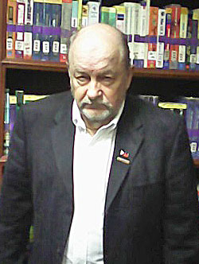

2016 Archive
| As heard on WCAI-FM RADIO (NPR) BROADCAST Dr. Pete Kutschera Interviewed on "The Point" by Host Sean Corcoran - Cape Cod, Mass. USA National Public Radio Affiliate - Oct, 4, 2016 |
Don Honorio Ventura Technical State University,
Philippine PARC & ARN, LTD. Solidifty Academic Linkage
Top academic leaders from Don Honorio Ventura Technological State University (DHVTSU), attended the Asia Pacific Conference on Social Science and Management (APCSSM) 19-21 January 2016 in Cebu where Dr. P.C. “Pete” Kutschera, center, ARN Ltd. and PARC – Philippine Amerasian Executive Director presented the keynote speech and served as International Liaison/Local Host. From left, Dr. Benigno P. Legamia, Jr., DHVTSU Director of Research & Developmental Services; Dean Dr. Dolores T. Quiambao, Graduate School; DHVTSU President Dr. Enrique C. Baking, Dr. Kutschera, Dean Dr. Elena C. Tesoro, College of Social Sciences and Philosophy and Mrs. Lorena R. Kutschera, Dr. Kutschera’s wife. Dr. Kutschera also keynoted the International Conference on Society, Psychology and Education (ICSPE-2016). Both conferences were sponsored by the Higher Education Forum, Taipei, Taiwan, Republic of China. (Photo by Jade Tsai, HEF).
Keynote Speech
|  | Topic:
21st Century Comfort Women: Penurious Filipinas and Inevitable Entrapment in the Sex Trade |
About the Speaker
Dr. “Pete” Kutschera has presented a dozen international research conference papers and co-authored numerous scholarly journal articles on the legacy of U.S. military and geopolitical involvement in the Philippine islands dating to 1898. His doctoral dissertation on poverty, stigmatization and mental health issues facing Filipino Amerasians focused on these forsaken biracial offspring abandoned or orphaned by U.S. military personnel. A segment of the Filipina national mothers of these forgotten, mixed heritage children had been leveraged into lives as sex workers by the military prostitution system which he has lectured on since 2012 at major conferences and symposia in venues ranging from Australia, Canada, Cambodia, Dubai, UAE and the Philippines to Singapore, South Korea, Taiwan, Thailand and the USA. A retired U.S. Army reserve forces lieutenant colonel and daily newspaper editor, Dr. Kutschera is an American citizen, permanent resident of the Philippines, and married 25 years to a Cebuana native who are parents of a Filipino American son.
Summary of Keynote Speech
Sex tourist and military prostitution, earmarks of the ubiquitous Philippine sex trade, have propelled profoundly impoverished Filipinas into the underbelly and grim netherworld of domestic and globalized commercialized sex. As a logical sequel to “No Way Out: The Tragic Transnational Sexual Exploitation of the Philippines,” 2nd APCBSS-2014 Conference, Taipei, Taiwan, ROC, our follow-on research and conference paper traces an uncanny resemblance of reluctant and tormented Filipina sex workers to iconic World War II Comfort Women: Korean, Chinese, Taiwanese and Philippine females forcibly impressed into duties as prostitutes by Japanese Imperial Empire to service the basest needs of military field personnel. Driven by the nearly century long U.S. colonial and military bases occupation, this dominance contributed to a devastating legacy of military prostitution – a nefarious system presaging a constellation of carnality ranging from high end sex tourism and de facto hotel resort brothels to barrio level karaoke bordellos sprawled across the island archipelago. Our socioeconomic analysis shows the Philippines, indeed, never truly recovered from the ravages of World War II, and unlike its wealthier East Asian neighbors, did not reach the promise and prosperity projected by independence and new world order recovery. Left in its wake to this day are unlucky generations of Filipina women; what our research finds are leveraged “penurious prostitutes” – victimized, desperate, the “poorest of the poor.” They are, in part, entrapped casualties, the legacy of international war policies and geopolitical misadventure not entirely unlike that which spawned the dreaded Comfort Woman scourge.
What’s Ahead for Filipino Amerasian Research in the Year 2016!
Amerasian Research Network, LTD. 2016 Update
December 15, 2015